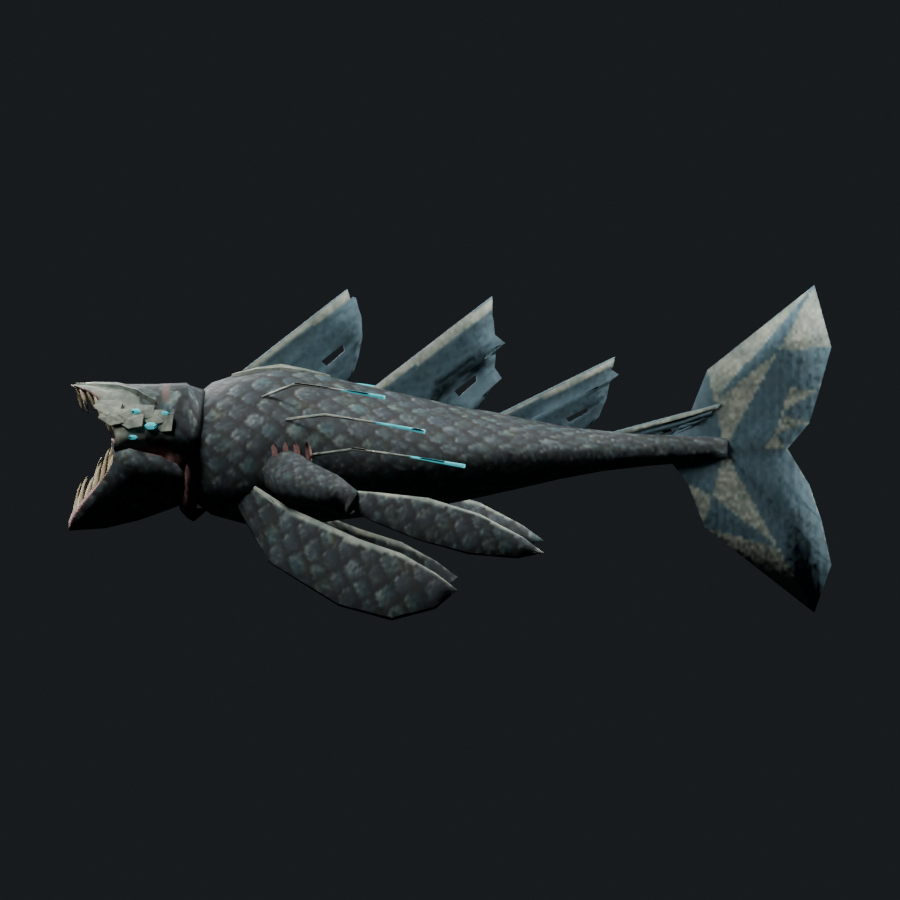
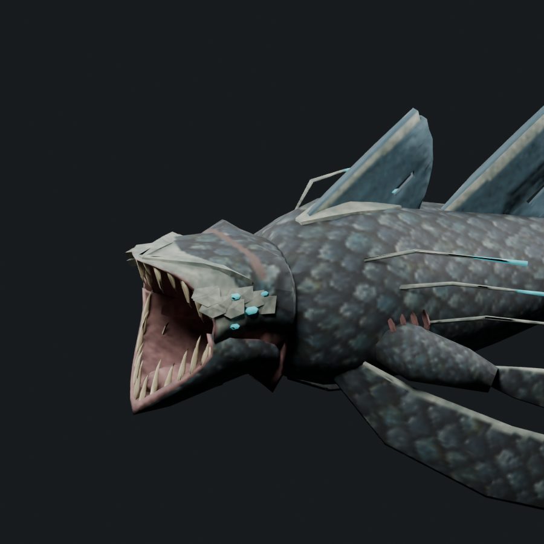
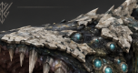
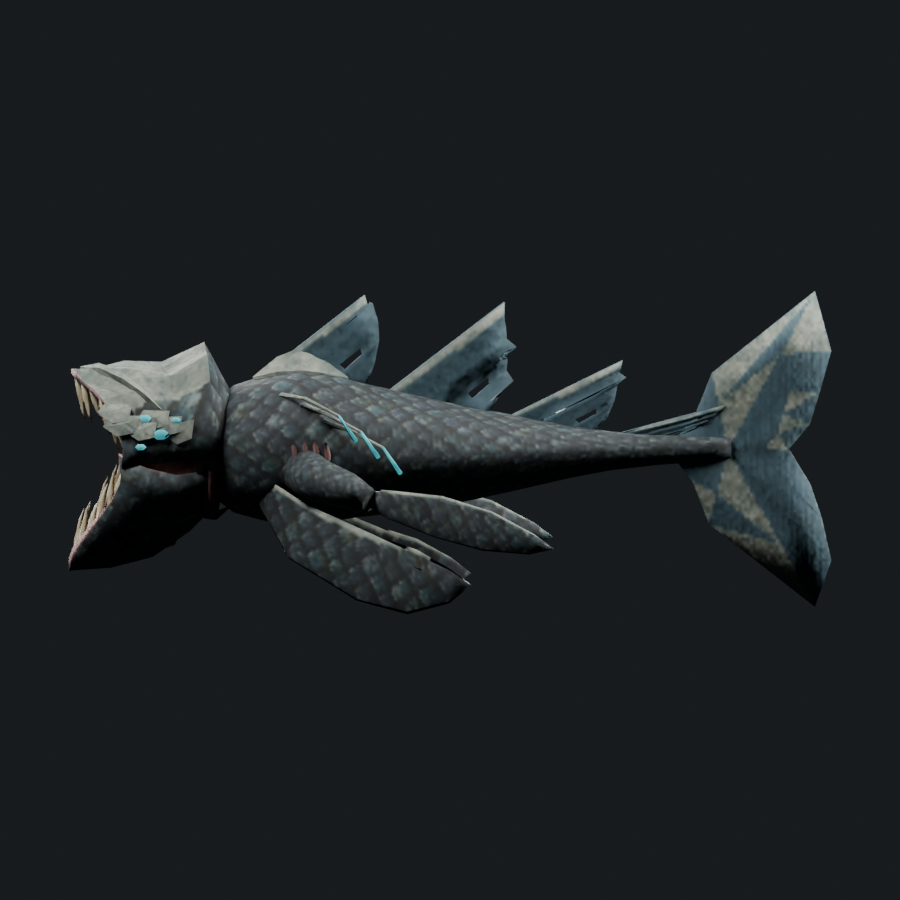

The head is shorter, narrower and lower. Front armor forms a low brow along the mouth, with scaled outer hide behind it and a small crown nub. Flesh is confined to a narrow dark roof seam. Three feelers per side spread independently with separated cyan ends.
6,934 triangles · 1.423× Serpent · cap 7,308. Art candidate; visual review remains required.



